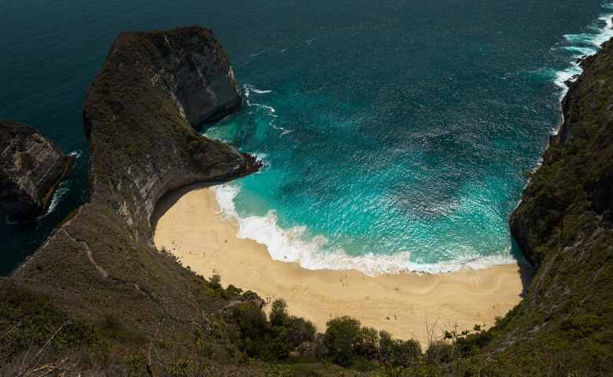

Gunung Rinjani

Gunung Rinjani, gunung berapi aktif tertinggi di Pulau Lombok,
Indonesia. Dengan kawah indah dan Danau Segara Anak di puncaknya,
menjadi tujuan pendakian dan petualangan favorit. Keindahan alamnya
mengagumkan, namun pendakian memerlukan fisik yang kuat.
Nusa Penida

Nusa Penida, pulau eksotis di Bali, Indonesia, dikenal dengan pantai
pasir putih, tebing karang megah, dan terumbu karang yang
menakjubkan. Terisolasi namun menarik wisatawan dengan penyelaman,
pemandangan spektakuler, dan tempat menyaksikan Mola-Mola. Potret
alamnya memukau dan mengundang petualangan yang tak terlupakan.